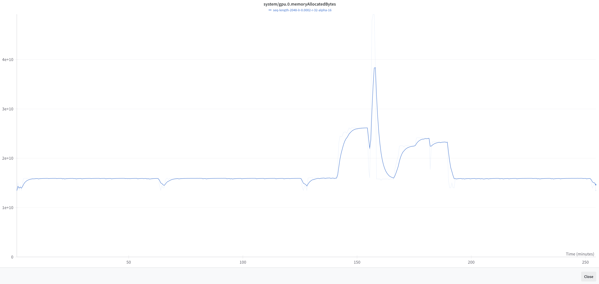

In this blog post I will be writing about some of my high level learnings from a recent LLM conference I took part in. These are some notes for myself so I don’t forget. These concepts are basic and high level but are details I was missing before when thinking about fine-tuning LLMs. Most of the details here were inspired by one of the conference speakers: Jonathan Whitaker’s —> talk.
Bits and Byte
You have probably heard the saying, “In the computer it’s all 0’s and 1’s”. Well, those 0’s and 1’s are called bits. A bit is the smallest unit of storage and simply stores a 0 or a 1. A byte is a group of 8 bits together.
1 byte= 8 bits.
All storage is measured in bytes.
Unit
Abbreviation
Approximate Size
Kilobyte
KB
about 1 thousand bytes
Megabyte
MB
about 1 million bytes
Gigabyte
GB
about 1 billion bytes
Terabyte
TB
about 1 trillion bytes
Memory Usage During Inference
I’m running this code from a local Jupyter notebook in Pycharm connected to a A6000 running on JarvisLabs. I used the axolotl template.
Code
import torchimport gcfrom transformers import AutoModelForCausalLM, AutoTokenizer, BitsAndBytesConfigdevice ="cuda"def cleanup(): gc.collect() torch.cuda.empty_cache() torch.cuda.reset_peak_memory_stats(device)def print_memory_stats():"""Print two different measures of GPU memory usage"""print(f"Max memory allocated: {torch.cuda.max_memory_allocated(device)/1e9:.2f}GB")# reserved (aka 'max_memory_cached') is ~the allocated memory plus pre-cached memoryprint(f"Max memory reserved: {torch.cuda.max_memory_reserved(device)/1e9:.2f}GB")print_memory_stats()cleanup()
Max memory allocated: 0.00GB
Max memory reserved: 0.00GB
Let’s load the model TinyLlama/TinyLlama-1.1B-Chat-v1.0. By default, it will load in float32.
We can check the dtype of the parameters and indeed see that they are stored in float32.
Code
set([(x.dtype) for x in model.parameters()])
{torch.float32}
Since the parameters are in float32, we can estimate that each parameter will takes up 32/8=4 bytes of memory. For a 1.1B parameter model that is 4.4gb. Let’s see if our rough back of the napkin calculation is correct.
Code
!nvidia-smi
Sat Jun 22 20:45:06 2024
+---------------------------------------------------------------------------------------+
| NVIDIA-SMI 535.104.05 Driver Version: 535.104.05 CUDA Version: 12.2 |
|-----------------------------------------+----------------------+----------------------+
| GPU Name Persistence-M | Bus-Id Disp.A | Volatile Uncorr. ECC |
| Fan Temp Perf Pwr:Usage/Cap | Memory-Usage | GPU-Util Compute M. |
| | | MIG M. |
|=========================================+======================+======================|
| 0 NVIDIA RTX A6000 Off | 00000000:1B:00.0 Off | Off |
| 30% 34C P2 67W / 300W | 4475MiB / 49140MiB | 0% Default |
| | | N/A |
+-----------------------------------------+----------------------+----------------------+
+---------------------------------------------------------------------------------------+
| Processes: |
| GPU GI CI PID Type Process name GPU Memory |
| ID ID Usage |
|=======================================================================================|
+---------------------------------------------------------------------------------------+
Code
print_memory_stats()
Max memory allocated: 4.40GB
Max memory reserved: 4.40GB
Yes, that’s what we thought.
Let’s run some inference with the model.
Code
def inference(messages): tokenized_chat = tokenizer.apply_chat_template(messages, tokenize=True, add_generation_prompt=True, return_tensors="pt")with torch.no_grad(): outputs = model.generate(input_ids=tokenized_chat.to("cuda"), max_new_tokens=128, do_sample=False)print(tokenizer.batch_decode(outputs.detach().cpu().numpy(), skip_special_tokens=True)[0])inference([{"role": "user", "content": "How many bytes are in one gigabyte?"}])
<|user|>
How many bytes are in one gigabyte?
<|assistant|>
Yes, there are 1,000,000,000 bytes in a gigabyte (GB).
Now let’s load the model in a lower precision. The model config points to what precision to use.
Code
model.config.torch_dtype
torch.bfloat16
Code
del modelcleanup()print_memory_stats()!nvidia-smi
Max memory allocated: 0.01GB
Max memory reserved: 0.02GB
Sat Jun 22 20:45:08 2024
+---------------------------------------------------------------------------------------+
| NVIDIA-SMI 535.104.05 Driver Version: 535.104.05 CUDA Version: 12.2 |
|-----------------------------------------+----------------------+----------------------+
| GPU Name Persistence-M | Bus-Id Disp.A | Volatile Uncorr. ECC |
| Fan Temp Perf Pwr:Usage/Cap | Memory-Usage | GPU-Util Compute M. |
| | | MIG M. |
|=========================================+======================+======================|
| 0 NVIDIA RTX A6000 Off | 00000000:1B:00.0 Off | Off |
| 30% 35C P2 91W / 300W | 351MiB / 49140MiB | 51% Default |
| | | N/A |
+-----------------------------------------+----------------------+----------------------+
+---------------------------------------------------------------------------------------+
| Processes: |
| GPU GI CI PID Type Process name GPU Memory |
| ID ID Usage |
|=======================================================================================|
+---------------------------------------------------------------------------------------+
Now let’s load the model in bfloat16. Estimating that each parameter will use 16/8=2 bytes of memory. For the same model, it should use roughly half the memory as before, 2.2GB.
Code
model = AutoModelForCausalLM.from_pretrained(model_ckpt, torch_dtype=torch.bfloat16, device_map=device)
Code
print_memory_stats()
Max memory allocated: 2.21GB
Max memory reserved: 2.32GB
Code
set([(x.dtype) for x in model.parameters()])
{torch.bfloat16}
Code
inference([{"role": "user", "content": "How many bytes are in one gigabyte?"}])
<|user|>
How many bytes are in one gigabyte?
<|assistant|>
Yes, there are 1,000,000,000 bytes in a gigabyte (GB).
This is the exact same output we got before. Since most models are currently trained using bfloat16, there’s no need to use full float32 precision. In this example if we use float32, it won’t improve inference results compared to bfloat16.
Code
del modelcleanup()print_memory_stats()
Max memory allocated: 0.01GB
Max memory reserved: 0.02GB
Now let’s try loading a quantized model using BitsAndBytesConfig to a load a model in 4bit precision. Note that the model weights are stored in 4bit precision but the computations are done in a higher precision. Here we are specifying that the dtype for computations is bf16. During inference, as well as training, the weights of the model are constantly being dequantized (from 4bit to bf16). This can be done for specific layers at a time during forward and backward passes, to keep memory requirements low. The computation happens in a higher precision.
Here we specify that the model should be loaded in 4bit and the computations done in bf16. Since we are using 4bit we expect each parameter to use 4/8=0.5 bytes so we should be using less than a GB of memory.
Max memory allocated: 0.84GB
Max memory reserved: 0.89GB
Now we can expect the model inference results to be different, for the same query we used before.
Code
inference([{"role": "user", "content": "How many bytes are in one gigabyte?"}])
<|user|>
How many bytes are in one gigabyte?
<|assistant|>
Yes, one gigabyte (GB) is equal to 1,073,741,824 bytes. A byte is a unit of information storage in the binary system, which is the basis for digital computing. In binary, each byte has a value of 10, with each bit representing a single binary digit. So, one gigabyte is equivalent to 1,073,741,824 bytes, which is approximately 1,000,000,000 bytes.
You can experiment with different types of quantization.
In this next example we load the model using:
NF4 quantization.
bnb_4bit_use_double_quant which uses a second quantization after the first one.
bfloat16 for computation
Code
del modelcleanup()print_memory_stats()
Max memory allocated: 0.01GB
Max memory reserved: 0.02GB
Max memory allocated: 0.80GB
Max memory reserved: 0.84GB
Code
inference([{"role": "user", "content": "How many bytes are in one gigabyte?"}])
<|user|>
How many bytes are in one gigabyte?
<|assistant|>
Yes, I can provide you with the answer to your question. A gigabyte (GB) is a unit of measurement for data storage. It is equal to 1,000 bytes. So, 1 GB is equal to 1,000,000,000 bytes.
I really like the high level explanation of quantization from this post by Patrick von Platen. In general, when running inference with quantized models the steps are:
Quantize all the weights of the model and load it (for example 4bit).
Pass through the input sequence in bf16.
Dynamically dequantize the weights to bf16 layer by layer during the forward pass
Quantize the weights back to 4bit after the computation
So if we want to do \(Y = X W\) where \(W\) and \(X\) are the weights and input sequence respectively, then for each matrix multiplication we do:
\(Y = X \cdot \text{dequantize}(W)\) ; \(\text{quantize}(W);\)
For this reason, inference is usually not faster when using quantized models. It’s slower. It is good to remember that quantization is a tradeoff between memory usage and output quality, as well as possibly inference time.
Memory Usage During Training
This is not something I know a lot about at the moment, so I can’t go into too much detail. But I can cover some high level basics that I learned recently. There are three main areas which contribute to the memory during training:
Model Parameters
Gradients
Optimizer State
There are other things to consider such as the activations which tend to dominate the memory at larger batch sizes and context lengths. But let’s ignore this to keep this simple and high level for now.
Suppose we want to fine-tune llama3-8B in bfloat16 with the basic Adam optimizer.
Model Parameters: 2 bytes per parameter for 8B parameters is 16GB
Gradients: To store the gradients for each tunable parameter is 16GB
Optimizer State: needs 2X the size of the model, to store first/second moments, which is 32GB.
So you would need at least 64GB to fully fine-tune llama3-8B in bfloat16. What can we do to fine-tune the model with much less memory?
First, we can quantize the model to 4bits. Then llama3-8B would take up 4GB of memory for the model parameters. That is a 4X reduction! But when training we don’t quantize the trainable parameters or gradients because the training would not converge. Training still needs to happen higher precision. This is where PEFT methods come in handy, such as LORA and QLORA. Let’s consider QLORA since we are discussing quantization.
With QLORA we add a set of trainable adapters whose parameters take up a much smaller percentage of the total model parameters. We can freeze the entire quantized model and keep it in 4bit. We can store the corresponding gradients and optimizer state in higher precision. This is possible because we are only dealing with a very small percentage of the total model parameters that are trainable.
In my last blog post I fine-tuned llama3-8B using the axolotl Library. It was configured to use QLORA with the model parameters in 4bit precision. It was using around 15GB of memory during training. There were some spikes due to me loading a model in a different python session, so just ignore those.

Code
del modelcleanup()print_memory_stats()
Max memory allocated: 0.01GB
Max memory reserved: 0.03GB
Inference with Axolotl Fine-Tuned Model
This was the corresponding bits and bytes config for my Axolotl fine-tune. As said previously, it was trained using QLORA in 4bit precision.
The model weights are indeed stored in 4-bit quantized format. This is what allows for the significant reduction in memory usage.
During inference, the weights are dequantized on-the-fly as they are needed for computation. However, it’s important to note that this dequantization happens in small chunks, not for the entire model at once.
As data passes through each layer, the relevant 4-bit weights for that layer are temporarily dequantized to bfloat16.
The computation for that layer is then performed using these dequantized bfloat16 weights and the input data (also in bfloat16).
After the computation for a layer is complete, the dequantized weights can be discarded, and the next layer’s weights are dequantized.
Given this information, 6 GB of memory usage for a 4-bit quantized 8B parameter model computing in bfloat16 does indeed sound reasonable. The base 4-bit model takes about 4 GB.
I took a few random tweets about Anthropic’s new model release Claude 3.5 Sonnet and run it through the fine-tuned model.
Code
text ="""<|begin_of_text|>Below is an instruction that describes a task, paired with an input that provides further context. Write a response that appropriately completes the request.### Instruction:Generate a list of interests.### Input:Introducing Claude 3.5 Sonnet—our most intelligent model yet.This is the first release in our 3.5 model family.Sonnet now outperforms competitor models on key evaluations, at twice the speed of Claude 3 Opus and one-fifth the cost.-------Less than 24 hours since Anthropic released Claude 3.5 Sonnet, and it surpassed GPT-4o.Here are 10 wild examples you don't want to miss:-------RIP ChatGPT?Anthropic just released Claude 3.5 Sonnet — ChatGPT's biggest competitor.12 Wild Examples of what it's capable of:-------I’m not as excited about OpenAI's new voice mod anymore. After seeing Anthropic's Sonnet 3.5, I realize that what matters most to me is the model's intelligence. I’ll be more excited for the next generation of OpenAI models rather than a voice mod that sounds more human.-------the sheer pettiness of anthropic saying "good evening, sam" in every single one of their demo videos for sonnet 3.5 sends me 💀how many more days will "sam" sit on gpt5?-------It really seems like Anthropic has scratched and Claude its way to the top.-------Anthropic is so back. Two things I like the most about Claude-3's release:1. Domain expert benchmarks. I'm much less interested in the saturated MMLU & HumanEval. Claude specifically picks Finance, Medicine, and Philosophy as expert domains and report performance. I recommend all LLM model cards to follow this, so that the different downstream applications know what to expect. 2. Refusal rate analysis. LLMs' overly cautious answers to innocent questions are becoming a pandemic. Anthropic is typically on the ultra safe end of the spectrum, but they recognize the problem and highlight their efforts on it. Bravo! I love that Claude dials up heat in the arena that GPT and Gemini dominate. Though keep in mind that GPT-4V, the high water mark that everyone desperately tries to beat, finished training in 2022. It's the calm before the storm.### Response:"""inputs = tokenizer(text, return_tensors="pt")with torch.no_grad(): outputs = model.generate(input_ids=inputs["input_ids"].to("cuda"), max_new_tokens=500, do_sample=True, temperature=1)print(tokenizer.batch_decode(outputs.detach().cpu().numpy(), skip_special_tokens=False)[0])
<|begin_of_text|><|begin_of_text|>Below is an instruction that describes a task, paired with an input that provides further context. Write a response that appropriately completes the request.
### Instruction:
Generate a list of interests.
### Input:
Introducing Claude 3.5 Sonnet—our most intelligent model yet.
This is the first release in our 3.5 model family.
Sonnet now outperforms competitor models on key evaluations, at twice the speed of Claude 3 Opus and one-fifth the cost.
-------
Less than 24 hours since Anthropic released Claude 3.5 Sonnet, and it surpassed GPT-4o.
Here are 10 wild examples you don't want to miss:
-------
RIP ChatGPT?
Anthropic just released Claude 3.5 Sonnet — ChatGPT's biggest competitor.
12 Wild Examples of what it's capable of:
-------
I’m not as excited about OpenAI's new voice mod anymore. After seeing Anthropic's Sonnet 3.5, I realize that what matters most to me is the model's intelligence.
I’ll be more excited for the next generation of OpenAI models rather than a voice mod that sounds more human.
-------
the sheer pettiness of anthropic saying "good evening, sam" in every single one of their demo videos for sonnet 3.5 sends me 💀
how many more days will "sam" sit on gpt5?
-------
It really seems like Anthropic has scratched and Claude its way to the top.
-------
Anthropic is so back. Two things I like the most about Claude-3's release:
1. Domain expert benchmarks. I'm much less interested in the saturated MMLU & HumanEval. Claude specifically picks Finance, Medicine, and Philosophy as expert domains and report performance. I recommend all LLM model cards to follow this, so that the different downstream applications know what to expect.
2. Refusal rate analysis. LLMs' overly cautious answers to innocent questions are becoming a pandemic. Anthropic is typically on the ultra safe end of the spectrum, but they recognize the problem and highlight their efforts on it. Bravo!
I love that Claude dials up heat in the arena that GPT and Gemini dominate. Though keep in mind that GPT-4V, the high water mark that everyone desperately tries to beat, finished training in 2022. It's the calm before the storm.
### Response:
LLM model,Anthropic,Claude,GPT,OpenAI,intelligence,competitor,ChatGPT,benchmark,expert domains,refusal rate,training,spectrum,GPT-4V<|end_of_text|>
Conclusion
Although my understanding of fine-tuning LLMs and memory usage is pretty high level, it’s making a lot more sense then it did before. I’m happy to have these notes to refer back to as I continue to learn about this topic.